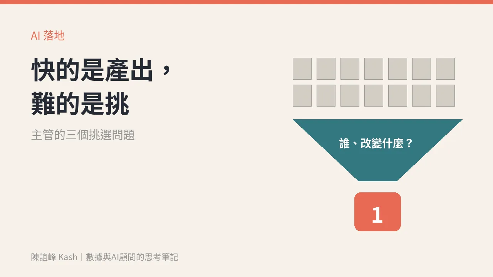

AI 讓行銷變快，沒讓它變簡單：快的是產出，難的是挑
稿子、素材、提案都多了好幾倍。主管真正要升級的不是工具，而是團隊「挑」的規則：做哪個、上哪個、砍哪個。

你的團隊現在一週能生出多少版文案？多少組素材？多少份提案？
很可能比一年前多很多。但業績有跟著多嗎？
這週 X 上有一串討論，起點是一句很簡單的話：「Marketing (even with AI) is still very hard.」行銷就算有了 AI，還是很難。很多行銷人在底下附和：AI 讓寫稿、做分析快了，但它還是讀不懂人為什麼買、為什麼不買。
我同意，而且想再往前推一步：AI 讓「做出來」變得很便宜，於是最貴的那一關，變成了「挑」。
審和挑，是兩件事
前幾天我寫過〈AI 沒有幫你少做決定，它只是把「做」變成了「審」〉，談的是「審」：這份東西對不對、能不能用。
這篇要談的是「挑」：這件事值不值得做、該不該上、上了要換到什麼。
審，是品質問題，可以寫驗收標準交給團隊。挑，是方向問題，問的是生意。一份文案可以完全正確、語氣漂亮，卻對任何人的行為都沒有影響。
AI 讓團隊把「審」做得越來越快，但如果沒有人負責「挑」，你只會得到一大堆正確、卻沒有用的東西。
為什麼這是主管的工作
產出變便宜之後，團隊會自然地多做。每個人都交得出東西，週會上每一份都看起來不錯，誰也不好意思說「這個不要」。
結果是三件事一起發生：預算被攤薄、成效的數字被稀釋、客戶看到的訊息越來越多，卻越來越記不住你。
挑，本質上是說「不」。這件事很難交給 AI，也很難交給剛入行的同事，因為它需要知道公司這一季要什麼生意。這就是主管的工作。
把「挑」寫成三個問題
我建議主管不要每次憑感覺挑，而是把判斷寫成三個問題，交給團隊自己先過一輪。
第一題：這個要改變誰的什麼行為？
不是「提升品牌好感」，而是寫成一句話：誰，從什麼行為，變成什麼行為。例如「三個月沒回購的會員，這週回來再買一次」。寫不出來的，先別做。
第二題：用哪個數字算它有效？
要選一個跟生意連得上的數字，而不是最容易變好看的那個。曝光、按讚都會因為量變多而上升；回購、名單、成交才會告訴你有沒有換到生意。數據不是報表，是下一筆生意。
第三題：如果只能上一個，為什麼是它？
這題是用來逼出取捨的。團隊交上五版，請他們自己排出第一名，並說出理由。理由講得出來，你就知道他想清楚了；講不出來，再多版本也只是多。
主管可以這樣改團隊的節奏
- 把「每週要交幾版」改成「每週要說清楚上哪一版、為什麼」。
- 每個新提案的第一行，固定寫「誰，從什麼變成什麼」。
- 上線之後約一個回看的時間，用第二題選的那個數字，判斷要加碼、修正，還是砍掉。
- 砍掉的不算失敗。挑得出來不做什麼，團隊的注意力才會集中。
AI 會讓產出繼續變快。真正拉開差距的，是誰的團隊挑得比較準。
下週一開會前，你可以先問自己：上週團隊做出來的東西裡，哪一個真的改變了客戶的行為？